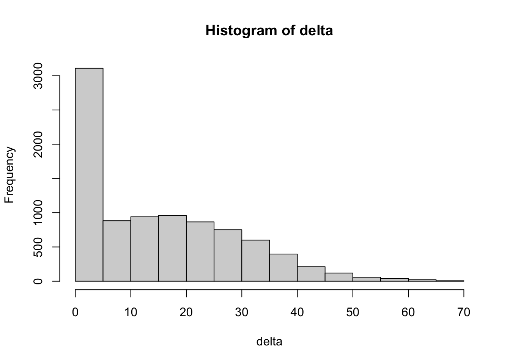

Last updated: 2021-03-12
Checks: 7 0
Knit directory: hfproject/
This reproducible R Markdown analysis was created with workflowr (version 1.6.2). The Checks tab describes the reproducibility checks that were applied when the results were created. The Past versions tab lists the development history.
Great! Since the R Markdown file has been committed to the Git repository, you know the exact version of the code that produced these results.
Great job! The global environment was empty. Objects defined in the global environment can affect the analysis in your R Markdown file in unknown ways. For reproduciblity it’s best to always run the code in an empty environment.
The command set.seed(20210219) was run prior to running the code in the R Markdown file. Setting a seed ensures that any results that rely on randomness, e.g. subsampling or permutations, are reproducible.
Great job! Recording the operating system, R version, and package versions is critical for reproducibility.
Nice! There were no cached chunks for this analysis, so you can be confident that you successfully produced the results during this run.
Great job! Using relative paths to the files within your workflowr project makes it easier to run your code on other machines.
Great! You are using Git for version control. Tracking code development and connecting the code version to the results is critical for reproducibility.
The results in this page were generated with repository version 3a1f84d. See the Past versions tab to see a history of the changes made to the R Markdown and HTML files.
Note that you need to be careful to ensure that all relevant files for the analysis have been committed to Git prior to generating the results (you can use wflow_publish or wflow_git_commit). workflowr only checks the R Markdown file, but you know if there are other scripts or data files that it depends on. Below is the status of the Git repository when the results were generated:
Ignored files:
Ignored: .DS_Store
Ignored: .Rhistory
Ignored: .Rproj.user/
Ignored: analysis/.Rhistory
Untracked files:
Untracked: data/full_ef.txt
Untracked: data/ms_hf.csv
Note that any generated files, e.g. HTML, png, CSS, etc., are not included in this status report because it is ok for generated content to have uncommitted changes.
These are the previous versions of the repository in which changes were made to the R Markdown (analysis/hf.Rmd) and HTML (docs/hf.html) files. If you’ve configured a remote Git repository (see ?wflow_git_remote), click on the hyperlinks in the table below to view the files as they were in that past version.
| File | Version | Author | Date | Message |
|---|---|---|---|---|
| Rmd | 709d105 | Your Name | 2021-03-12 | wflow_git_commit(“analysis/hf.Rmd”) |
| html | b6a2b29 | Your Name | 2021-02-27 | Build site. |
| Rmd | 3422387 | Your Name | 2021-02-27 | Add my first analysis |
| html | 198089e | Your Name | 2021-02-27 | Build site. |
| html | 47f3a69 | Your Name | 2021-02-27 | Build site. |
| Rmd | d15907e | Your Name | 2021-02-27 | wflow_publish(“~/hfproject/analysis/hf.Rmd”) |
Here we organize the data frame for preliminary analysis.
library("workflowr")
df=read.csv("data/ms_hf.csv")
good_df=df[,c("X","Age.of.Death","Gender","Initial.BP..SYSTOLIC","Earliest..Creatinine1")]
#names(df)
ef_min=df[,grep(names(df),pattern = "EF_Min")]
##looks like
df_min=df[,c("EF_Min..EF","EF_Min..LVEjectionFraction2D","EF_Min..EF","EF_Min..LVEjectionFraction2D","EF_Min..LVEFModSimpBiPlane","EF_Min..EstimatedEF")]
mean_ef_min=apply(df_min,1,function(x){
x=as.numeric(x)
mean(na.omit(x))})
ef_max=df[,grep(names(df),pattern = "EF_Max")]
names(ef_max) [1] "EF_Max.EchoDate"
[2] "EF_Max..EF"
[3] "EF_Max..DoppTricuspidPeakVelocity"
[4] "EF_Max..DoppTricuspidPeakEstGrad"
[5] "EF_Max..OutflowInflowStrokeVolume"
[6] "EF_Max..OutflowInflowCardiacOutput"
[7] "EF_Max..LVIDd2D"
[8] "EF_Max..LVIDs2D"
[9] "EF_Max..FractionalShortening2D"
[10] "EF_Max..LVEjectionFraction2D"
[11] "EF_Max..LVEFModSim4C"
[12] "EF_Max..LVEFModSimp2C"
[13] "EF_Max..LVEFModSim4C2D"
[14] "EF_Max..LVEFModSimp2C2D"
[15] "EF_Max..LVvolumesystole"
[16] "EF_Max..LVvolumediastole"
[17] "EF_Max..LVvolumeDiastole2d"
[18] "EF_Max..LVvolumesystole2d"
[19] "EF_Max..LVIDdInd"
[20] "EF_Max..RVIDdInd"
[21] "EF_Max..LVEFModSimpBiPlane"
[22] "EF_Max..LAVolumeSimpBiPlane"
[23] "EF_Max..MitralEPrimeLateralVelocity"
[24] "EF_Max..MitralEPrimeMedialVelocity"
[25] "EF_Max..MitralInflowEEPrimeLatRatio"
[26] "EF_Max..MitralInflowEEPrimeMedialRatio"
[27] "EF_Max..LeftVentOutflowVTI"
[28] "EF_Max..LVDAMOD4C"
[29] "EF_Max..LVDLMOD4C"
[30] "EF_Max..LVDVMOD4C"
[31] "EF_Max..LVSVMOD4C"
[32] "EF_Max..CavitySize"
[33] "EF_Max..GlobalFX"
[34] "EF_Max..EFRange"
[35] "EF_Max..EstimatedEF"
[36] "EF_Max..EFMethod"
[37] "EF_Max..NoLVH"
[38] "EF_Max..ConcentricLVH"
[39] "EF_Max..EccentricLVH"
[40] "EF_Max..DiastolicFillingPattern"
[41] "EF_Max..DiastolicFillingPressure"
[42] "EF_Max..GradeofDysfunction"
[43] "EF_Max..YH_EF3DE"
[44] "EF_Max..YH_GLSHide"
[45] "EF_Max..YH_EFRangeHide"
[46] "EF_Max..YH_EFToReport"
[47] "EF_Max..YH_GLSPercentDouble"
[48] "EF_Max..CavitySize1"
[49] "EF_Max..GlobalFX1"
[50] "EF_Max..Regurgitation"
[51] "EF_Max..AnnularDilatation"
[52] "EF_Max..RVSP"
[53] "EF_Max..PulmHtn"
[54] "EF_Max..Echo_Indications" ef_max=df[,c("EF_Max..EF","EF_Max..LVEjectionFraction2D","EF_Max..EF","EF_Max..LVEjectionFraction2D","EF_Max..LVEFModSimpBiPlane","EF_Max..EstimatedEF")]
mean_ef_max=apply(ef_max,1,function(x)
{x=as.numeric(x)
mean(na.omit(x))
})
full_ef=data.frame(good_df,mean_ef_max,mean_ef_min)
head(full_ef) X Age.of.Death Gender Initial.BP..SYSTOLIC Earliest..Creatinine1
1 MR1000313 3/4/19 Female 132 1.00
2 MR1000917 <NA> Female 82 6.00
3 MR1001042 <NA> Male 124 0.97
4 MR1001314 1/14/19 Female 120 0.79
5 MR1001529 7/1/17 Male 140 0.70
6 MR1002942 <NA> Male 134 0.60
mean_ef_max mean_ef_min
1 35.30000 35.30000
2 27.00000 27.00000
3 46.00000 37.00000
4 18.60000 18.60000
5 32.50000 32.50000
6 31.38896 31.38896write.table(full_ef,"data/full_ef.txt")Here we divide the table into those with improved EF and no change in EF
delta=mean_ef_max-mean_ef_min
summary(na.omit(delta))##we can see that 25% of individuals had an improvement greater than or equal to 25% Min. 1st Qu. Median Mean 3rd Qu. Max.
0.00 0.00 12.85 14.93 25.00 69.39 hist(delta)
full_ef=cbind(full_ef,delta)
full_ef$Gender=as.factor(full_ef$Gender)
improve=full_ef[full_ef$delta>10,]
no_improve=full_ef[full_ef$delta<10,]
summary(improve) X Age.of.Death Gender Initial.BP..SYSTOLIC
Length:5010 Length:5010 : 0 Min. : 33.0
Class :character Class :character Female :1831 1st Qu.:115.0
Mode :character Mode :character Male :3142 Median :129.0
MR1321604: 1 Mean :129.9
NA's : 36 3rd Qu.:142.0
Max. :234.0
NA's :41
Earliest..Creatinine1 mean_ef_max mean_ef_min delta
Min. : 0.100 Min. :17.67 Min. :-1.00 Min. :10.00
1st Qu.: 0.890 1st Qu.:44.67 1st Qu.:21.02 1st Qu.:16.67
Median : 1.100 Median :53.00 Median :27.80 Median :23.61
Mean : 1.477 Mean :52.25 Mean :27.04 Mean :25.21
3rd Qu.: 1.480 3rd Qu.:60.75 3rd Qu.:34.00 3rd Qu.:31.88
Max. :22.500 Max. :91.00 Max. :46.00 Max. :69.39
NA's :186 NA's :35 NA's :35 NA's :35 summary(no_improve) X Age.of.Death Gender Initial.BP..SYSTOLIC
Length:3971 Length:3971 : 0 Min. : 0.0
Class :character Class :character Female :1213 1st Qu.:112.0
Mode :character Mode :character Male :2723 Median :126.0
MR1321604: 0 Mean :126.9
NA's : 35 3rd Qu.:140.0
Max. :224.0
NA's :41
Earliest..Creatinine1 mean_ef_max mean_ef_min delta
Min. : 0.100 Min. : 0.00 Min. : 0.00 Min. :0.000
1st Qu.: 0.900 1st Qu.:25.00 1st Qu.:23.00 1st Qu.:0.000
Median : 1.120 Median :32.00 Median :30.00 Median :0.000
Mean : 1.445 Mean :30.85 Mean :28.84 Mean :2.006
3rd Qu.: 1.500 3rd Qu.:37.50 3rd Qu.:35.39 3rd Qu.:4.000
Max. :13.300 Max. :50.70 Max. :48.00 Max. :9.988
NA's :404 NA's :35 NA's :35 NA's :35 As we can see, no huge apparent differences in initital creatining and BP or gender composition.
Now we can more closely individuals the best and worst improved individuals. Let’s look at the top 25%.
df2=cbind(df,delta)
d2=df2[-which(is.na(delta)),]
summary(d2) X Birthdate Age.of.Death Gender
Length:8968 Length:8968 Length:8968 Length:8968
Class :character Class :character Class :character Class :character
Mode :character Mode :character Mode :character Mode :character
Race Ethnicity BMI city
Length:8968 Length:8968 Mode:logical Length:8968
Class :character Class :character NA's:8968 Class :character
Mode :character Mode :character Mode :character
zip Zipcode.coded State
Length:8968 Min. : 1.0 Length:8968
Class :character 1st Qu.:167.0 Class :character
Mode :character Median :213.0 Mode :character
Mean :200.1
3rd Qu.:218.0
Max. :495.0
Etiology.of.Cardiomypoathy XXX MIF
Min. :0.0000 Length:8968 Min. :0.0000
1st Qu.:0.0000 Class :character 1st Qu.:0.0000
Median :1.0000 Mode :character Median :1.0000
Mean :0.5588 Mean :0.5588
3rd Qu.:1.0000 3rd Qu.:1.0000
Max. :1.0000 Max. :1.0000
NA's :1
MI CHFF CHF PVDF
Length:8968 Min. :1 Length:8968 Min. :0.000
Class :character 1st Qu.:1 Class :character 1st Qu.:0.000
Mode :character Median :1 Mode :character Median :0.000
Mean :1 Mean :0.472
3rd Qu.:1 3rd Qu.:1.000
Max. :1 Max. :1.000
PVD CVAF CVA DementiaF
Length:8968 Min. :0.0000 Length:8968 Min. :0.0000
Class :character 1st Qu.:0.0000 Class :character 1st Qu.:0.0000
Mode :character Median :0.0000 Mode :character Median :0.0000
Mean :0.3891 Mean :0.1559
3rd Qu.:1.0000 3rd Qu.:0.0000
Max. :1.0000 Max. :1.0000
Dementia PulmF Pulm RheumF
Length:8968 Min. :0.000 Length:8968 Min. :0.00000
Class :character 1st Qu.:0.000 Class :character 1st Qu.:0.00000
Mode :character Median :1.000 Mode :character Median :0.00000
Mean :0.521 Mean :0.07806
3rd Qu.:1.000 3rd Qu.:0.00000
Max. :1.000 Max. :1.00000
Rheum PUDF PUD Liver_mildF
Length:8968 Min. :0.00000 Length:8968 Min. :0.0000
Class :character 1st Qu.:0.00000 Class :character 1st Qu.:0.0000
Mode :character Median :0.00000 Mode :character Median :0.0000
Mean :0.08497 Mean :0.1863
3rd Qu.:0.00000 3rd Qu.:0.0000
Max. :1.00000 Max. :1.0000
Liver_mild Liver_severeF Liver_severe DM_UncompF
Length:8968 Min. :0.00000 Length:8968 Min. :0.0000
Class :character 1st Qu.:0.00000 Class :character 1st Qu.:0.0000
Mode :character Median :0.00000 Mode :character Median :0.0000
Mean :0.03312 Mean :0.4781
3rd Qu.:0.00000 3rd Qu.:1.0000
Max. :1.00000 Max. :1.0000
DM_Uncomp DM_CompF DM_Comp ParaplegiaF
Length:8968 Min. :0 Mode:logical Min. :0.00000
Class :character 1st Qu.:0 NA's:8968 1st Qu.:0.00000
Mode :character Median :0 Median :0.00000
Mean :0 Mean :0.07203
3rd Qu.:0 3rd Qu.:0.00000
Max. :0 Max. :1.00000
Paraplegia CKDF CKD MalignancyF
Length:8968 Min. :0.0000 Length:8968 Min. :0.0000
Class :character 1st Qu.:0.0000 Class :character 1st Qu.:0.0000
Mode :character Median :1.0000 Mode :character Median :0.0000
Mean :0.5288 Mean :0.2787
3rd Qu.:1.0000 3rd Qu.:1.0000
Max. :1.0000 Max. :1.0000
Malignancy MetsF Mets AIDSF
Length:8968 Min. :0.0000 Length:8968 Min. :0.00000
Class :character 1st Qu.:0.0000 Class :character 1st Qu.:0.00000
Mode :character Median :0.0000 Mode :character Median :0.00000
Mean :0.1348 Mean :0.01316
3rd Qu.:0.0000 3rd Qu.:0.00000
Max. :1.0000 Max. :1.00000
AIDS RHFF RHF SysHFF
Length:8968 Min. :0.0000 Length:8968 Min. :0.0000
Class :character 1st Qu.:0.0000 Class :character 1st Qu.:1.0000
Mode :character Median :0.0000 Mode :character Median :1.0000
Mean :0.0271 Mean :0.8786
3rd Qu.:0.0000 3rd Qu.:1.0000
Max. :1.0000 Max. :1.0000
SysHF DiastHFF DiastHF HTNF
Length:8968 Min. :0.0000 Length:8968 Min. :0.0000
Class :character 1st Qu.:0.0000 Class :character 1st Qu.:1.0000
Mode :character Median :0.0000 Mode :character Median :1.0000
Mean :0.2194 Mean :0.9416
3rd Qu.:0.0000 3rd Qu.:1.0000
Max. :1.0000 Max. :1.0000
HTN HyperlipidF Hyperlipid ArrhythF
Length:8968 Min. :0.0000 Length:8968 Min. :0.0000
Class :character 1st Qu.:1.0000 Class :character 1st Qu.:0.0000
Mode :character Median :1.0000 Mode :character Median :0.0000
Mean :0.7756 Mean :0.4807
3rd Qu.:1.0000 3rd Qu.:1.0000
Max. :1.0000 Max. :1.0000
Arrhyth BradyF Brady VTF
Length:8968 Min. :0.0000 Length:8968 Min. :0.0000
Class :character 1st Qu.:0.0000 Class :character 1st Qu.:0.0000
Mode :character Median :0.0000 Mode :character Median :0.0000
Mean :0.1829 Mean :0.4086
3rd Qu.:0.0000 3rd Qu.:1.0000
Max. :1.0000 Max. :1.0000
VT VFF VF AfibF
Length:8968 Min. :0.00000 Length:8968 Min. :0.0000
Class :character 1st Qu.:0.00000 Class :character 1st Qu.:0.0000
Mode :character Median :0.00000 Mode :character Median :1.0000
Mean :0.06947 Mean :0.5675
3rd Qu.:0.00000 3rd Qu.:1.0000
Max. :1.00000 Max. :1.0000
Afib AflutterF Aflutter AVB1F
Length:8968 Min. :0.00000 Length:8968 Min. :0.00000
Class :character 1st Qu.:0.00000 Class :character 1st Qu.:0.00000
Mode :character Median :0.00000 Mode :character Median :0.00000
Mean :0.04694 Mean :0.07817
3rd Qu.:0.00000 3rd Qu.:0.00000
Max. :1.00000 Max. :1.00000
AVB1 AVB2F AVB2 CHBlkF
Length:8968 Min. :0.00000 Length:8968 Min. :0.00000
Class :character 1st Qu.:0.00000 Class :character 1st Qu.:0.00000
Mode :character Median :0.00000 Mode :character Median :0.00000
Mean :0.02955 Mean :0.08196
3rd Qu.:0.00000 3rd Qu.:0.00000
Max. :1.00000 Max. :1.00000
CHBlk SVTF SVT CardArrF
Length:8968 Min. :0.0000 Length:8968 Min. :0.0000
Class :character 1st Qu.:0.0000 Class :character 1st Qu.:0.0000
Mode :character Median :0.0000 Mode :character Median :0.0000
Mean :0.1665 Mean :0.1136
3rd Qu.:0.0000 3rd Qu.:0.0000
Max. :1.0000 Max. :1.0000
CardArr CADF CAD MyocardF
Length:8968 Min. :0.0000 Length:8968 Min. :0.00000
Class :character 1st Qu.:1.0000 Class :character 1st Qu.:0.00000
Mode :character Median :1.0000 Mode :character Median :0.00000
Mean :0.7649 Mean :0.01238
3rd Qu.:1.0000 3rd Qu.:0.00000
Max. :1.0000 Max. :1.00000
Myocard AorticVF AorticV AorticSF
Length:8968 Min. :0.0000 Length:8968 Min. :0.0000
Class :character 1st Qu.:0.0000 Class :character 1st Qu.:0.0000
Mode :character Median :0.0000 Mode :character Median :0.0000
Mean :0.1676 Mean :0.1556
3rd Qu.:0.0000 3rd Qu.:0.0000
Max. :1.0000 Max. :1.0000
AorticS MitralVF MitralV TricuspVRF
Length:8968 Min. :0.0000 Length:8968 Min. :0.0000
Class :character 1st Qu.:0.0000 Class :character 1st Qu.:0.0000
Mode :character Median :0.0000 Mode :character Median :0.0000
Mean :0.4961 Mean :0.2619
3rd Qu.:1.0000 3rd Qu.:1.0000
Max. :1.0000 Max. :1.0000
TricuspVR PulmVRF PulmVR PulmVSF
Length:8968 Min. :0.00000 Length:8968 Min. :0.000000
Class :character 1st Qu.:0.00000 Class :character 1st Qu.:0.000000
Mode :character Median :0.00000 Mode :character Median :0.000000
Mean :0.05308 Mean :0.002899
3rd Qu.:0.00000 3rd Qu.:0.000000
Max. :1.00000 Max. :1.000000
PulmVS HypoThyF HypoThy HyperThyF
Length:8968 Min. :0.0000 Length:8968 Min. :0
Class :character 1st Qu.:0.0000 Class :character 1st Qu.:0
Mode :character Median :0.0000 Mode :character Median :0
Mean :0.2472 Mean :0
3rd Qu.:0.0000 3rd Qu.:0
Max. :1.0000 Max. :0
HyperThy IschCMF IschCM DilatCMF
Mode:logical Min. :0.0000 Length:8968 Min. :0.0000
NA's:8968 1st Qu.:0.0000 Class :character 1st Qu.:1.0000
Median :1.0000 Mode :character Median :1.0000
Mean :0.5224 Mean :0.7565
3rd Qu.:1.0000 3rd Qu.:1.0000
Max. :1.0000 Max. :1.0000
DilatCM IdioCMF IdioCM ViralCMF
Length:8968 Min. :0.0000 Length:8968 Min. :0.0000
Class :character 1st Qu.:0.0000 Class :character 1st Qu.:0.0000
Mode :character Median :1.0000 Mode :character Median :0.0000
Mean :0.5844 Mean :0.4212
3rd Qu.:1.0000 3rd Qu.:1.0000
Max. :1.0000 Max. :1.0000
ViralCM PPartumCMF PPartumCM SarcCMF
Length:8968 Min. :0.00000 Length:8968 Min. :0.00000
Class :character 1st Qu.:0.00000 Class :character 1st Qu.:0.00000
Mode :character Median :0.00000 Mode :character Median :0.00000
Mean :0.00368 Mean :0.06055
3rd Qu.:0.00000 3rd Qu.:0.00000
Max. :1.00000 Max. :1.00000
SarcCM CocaineCMF CocaineCM AlcCMF
Length:8968 Min. :0.00000 Length:8968 Min. :0.0000
Class :character 1st Qu.:0.00000 Class :character 1st Qu.:0.0000
Mode :character Median :0.00000 Mode :character Median :1.0000
Mean :0.03546 Mean :0.6338
3rd Qu.:0.00000 3rd Qu.:1.0000
Max. :1.00000 Max. :1.0000
AlcCM CardAmylF CardAmyl ArrhyRVDyspF
Length:8968 Min. :0.00000 Length:8968 Min. :0.0000
Class :character 1st Qu.:0.00000 Class :character 1st Qu.:0.0000
Mode :character Median :0.00000 Mode :character Median :1.0000
Mean :0.06267 Mean :0.5156
3rd Qu.:0.00000 3rd Qu.:1.0000
Max. :1.00000 Max. :1.0000
ArrhyRVDysp HTNHeartDsF HTNHeartDs StressCMF
Length:8968 Min. :0.00000 Length:8968 Min. :0.00000
Class :character 1st Qu.:0.00000 Class :character 1st Qu.:0.00000
Mode :character Median :0.00000 Mode :character Median :0.00000
Mean :0.08675 Mean :0.04014
3rd Qu.:0.00000 3rd Qu.:0.00000
Max. :1.00000 Max. :1.00000
StressCM CongenCMF CongenCM HOCMF
Length:8968 Min. :0.00000 Length:8968 Min. :0.00000
Class :character 1st Qu.:0.00000 Class :character 1st Qu.:0.00000
Mode :character Median :0.00000 Mode :character Median :0.00000
Mean :0.00145 Mean :0.02598
3rd Qu.:0.00000 3rd Qu.:0.00000
Max. :1.00000 Max. :1.00000
HOCM ThyrotoxicF Thyrotoxic AcMyoCardF
Length:8968 Min. :0.00000 Length:8968 Min. :0.000000
Class :character 1st Qu.:0.00000 Class :character 1st Qu.:0.000000
Mode :character Median :0.00000 Mode :character Median :0.000000
Mean :0.09489 Mean :0.007471
3rd Qu.:0.00000 3rd Qu.:0.000000
Max. :1.00000 Max. :1.000000
AcMyoCard XXX.1 Initial.BP..SYSTOLIC
Length:8968 Length:8968 Min. : 0.0
Class :character Class :character 1st Qu.:114.0
Mode :character Mode :character Median :128.0
Mean :128.5
3rd Qu.:140.0
Max. :234.0
NA's :12
Initial.BP..DIASTOLIC Initial.BP..mean Initial..Pulse Recent..Systolic
Min. : 0.00 Mode:logical Min. : 0.00 Min. : 0.0
1st Qu.: 66.00 NA's:8968 1st Qu.: 66.00 1st Qu.:103.0
Median : 73.00 Median : 75.00 Median :118.0
Mean : 73.79 Mean : 76.23 Mean :117.6
3rd Qu.: 81.00 3rd Qu.: 85.00 3rd Qu.:132.0
Max. :160.00 Max. :164.00 Max. :254.0
NA's :12 NA's :13 NA's :9
Recent..Diastolic Recent..mean Recent..Pulse Earliest..AlkPhos1
Min. : 0.00 Mode:logical Min. : 0.00 Min. : 19.0
1st Qu.: 60.00 NA's:8968 1st Qu.: 65.00 1st Qu.: 64.0
Median : 69.00 Median : 75.00 Median : 81.0
Mean : 68.41 Mean : 74.47 Mean : 95.5
3rd Qu.: 78.00 3rd Qu.: 86.00 3rd Qu.: 107.0
Max. :239.00 Max. :198.00 Max. :1192.0
NA's :9 NA's :9 NA's :1133
Earliest.ALT1 Earliest..AST1 Earliest..BiliTotal1 Earliest..Potassium1
Min. : 1.00 Min. : 5.00 Min. : 0.100 Min. :2.100
1st Qu.: 15.00 1st Qu.: 19.00 1st Qu.: 0.400 1st Qu.:3.900
Median : 22.00 Median : 25.00 Median : 0.600 Median :4.300
Mean : 47.58 Mean : 57.25 Mean : 0.746 Mean :4.292
3rd Qu.: 36.00 3rd Qu.: 37.00 3rd Qu.: 0.860 3rd Qu.:4.600
Max. :5635.00 Max. :11500.00 Max. :36.000 Max. :8.900
NA's :1108 NA's :1101 NA's :1142 NA's :514
Earliest..Sodium1 Earliest.Chloride1 Earliest..Creatinine1 Earliest..BNP1
Min. :109.0 Min. : 71.0 Min. : 0.100 Min. : 5
1st Qu.:137.0 1st Qu.: 99.0 1st Qu.: 0.900 1st Qu.: 1032
Median :139.0 Median :102.0 Median : 1.100 Median : 2955
Mean :138.8 Mean :101.6 Mean : 1.465 Mean : 7218
3rd Qu.:141.0 3rd Qu.:105.0 3rd Qu.: 1.500 3rd Qu.: 8168
Max. :163.0 Max. :129.0 Max. :22.500 Max. :172457
NA's :534 NA's :534 NA's :520 NA's :3139
Earliest..BUN1 Earliest..UricAcid1 Earliest..eGFR Earlist..Totalchol1
Min. : 1.00 Min. : 0.800 Min. : 2.00 Min. : 40.0
1st Qu.: 16.00 1st Qu.: 5.800 1st Qu.: 41.00 1st Qu.:120.0
Median : 22.00 Median : 7.500 Median : 53.00 Median :146.0
Mean : 26.97 Mean : 7.825 Mean : 51.57 Mean :151.8
3rd Qu.: 31.00 3rd Qu.: 9.500 3rd Qu.: 58.00 3rd Qu.:177.0
Max. :235.00 Max. :23.800 Max. :220.00 Max. :866.0
NA's :533 NA's :6848 NA's :2348 NA's :3602
Earlist.LDL1 Earliest..HDL1 Earliest..Triglyceride1
Min. : 6.00 Min. : 4.00 Min. : 18.0
1st Qu.: 56.00 1st Qu.: 35.00 1st Qu.: 74.0
Median : 75.00 Median : 44.00 Median : 102.0
Mean : 80.77 Mean : 46.43 Mean : 126.7
3rd Qu.:101.00 3rd Qu.: 55.00 3rd Qu.: 147.0
Max. :395.00 Max. :198.00 Max. :1967.0
NA's :4112 NA's :3621 NA's :3243
Earliest..Hemoglobin1 Earliest..HGBA1C1 XXX.2 Latest..AlkPhos2
Min. : 2.70 Min. : 4.100 Length:8968 Min. : 15.0
1st Qu.:11.00 1st Qu.: 5.700 Class :character 1st Qu.: 68.0
Median :12.60 Median : 6.300 Mode :character Median : 88.0
Mean :12.47 Mean : 6.864 Mean : 109.8
3rd Qu.:14.10 3rd Qu.: 7.400 3rd Qu.: 119.0
Max. :19.30 Max. :231.000 Max. :2894.0
NA's :627 NA's :3779 NA's :1133
Latest..ALT2 Latest..AST2 Latest..BiliTotal2 Latest..Potassium2
Min. : 1.00 Min. : 4.0 Min. : 0.1000 Min. :2.200
1st Qu.: 14.00 1st Qu.: 19.0 1st Qu.: 0.4000 1st Qu.:3.900
Median : 21.00 Median : 26.0 Median : 0.6000 Median :4.300
Mean : 67.81 Mean : 101.8 Mean : 0.9584 Mean :4.331
3rd Qu.: 35.00 3rd Qu.: 38.0 3rd Qu.: 0.9000 3rd Qu.:4.675
Max. :8959.00 Max. :21280.0 Max. :57.5000 Max. :8.400
NA's :1108 NA's :1101 NA's :1142 NA's :514
Latest..Sodium2 Latest..Chloride2 Latest..Creatinine2 Latest..BNP2
Min. :111.0 Min. : 70.0 Min. : 0.060 Min. : 5
1st Qu.:137.0 1st Qu.: 98.0 1st Qu.: 0.940 1st Qu.: 883
Median :139.0 Median :102.0 Median : 1.240 Median : 3323
Mean :138.8 Mean :101.4 Mean : 1.731 Mean : 9230
3rd Qu.:141.0 3rd Qu.:105.0 3rd Qu.: 1.900 3rd Qu.: 10621
Max. :176.0 Max. :135.0 Max. :20.140 Max. :172457
NA's :534 NA's :534 NA's :520 NA's :3139
Latest..BUN2 Latest..UricAcid2 Latest..eGFR2 Latest..TotalChol2
Min. : 2.0 Min. : 1.000 Min. : 2.00 Min. : 39
1st Qu.: 18.0 1st Qu.: 5.400 1st Qu.: 33.00 1st Qu.:116
Median : 26.0 Median : 6.900 Median : 51.00 Median :140
Mean : 34.5 Mean : 7.305 Mean : 47.29 Mean :146
3rd Qu.: 42.0 3rd Qu.: 8.900 3rd Qu.: 57.00 3rd Qu.:171
Max. :271.0 Max. :19.000 Max. :220.00 Max. :690
NA's :533 NA's :6848 NA's :2348 NA's :3602
Latest..LDL2 Latest..HDL2 Latest..Triglyceride2 Latest..Hemoglobin2
Min. : -4.00 Min. : 4.0 Min. : 16.0 Min. : 3.3
1st Qu.: 52.00 1st Qu.: 35.0 1st Qu.: 74.0 1st Qu.: 9.6
Median : 70.00 Median : 44.0 Median : 101.0 Median :11.5
Mean : 76.22 Mean : 46.2 Mean : 125.3 Mean :11.5
3rd Qu.: 94.00 3rd Qu.: 55.0 3rd Qu.: 145.0 3rd Qu.:13.3
Max. :332.00 Max. :177.0 Max. :3977.0 Max. :19.3
NA's :4112 NA's :3621 NA's :3243 NA's :627
Latest..HGBA1C2 XXX.3 XXX.4 CarvediloL
Min. : 4.000 Length:8968 Length:8968 Min. :1
1st Qu.: 5.700 Class :character Class :character 1st Qu.:1
Median : 6.200 Mode :character Mode :character Median :1
Mean : 6.732 Mean :1
3rd Qu.: 7.300 3rd Qu.:1
Max. :120.000 Max. :1
NA's :3779 NA's :3640
Active Dosage Metoprolol Active.1
Min. :0.00 Length:8968 Min. :1 Min. :0.0000
1st Qu.:0.00 Class :character 1st Qu.:1 1st Qu.:0.0000
Median :1.00 Mode :character Median :1 Median :0.0000
Mean :0.53 Mean :1 Mean :0.4108
3rd Qu.:1.00 3rd Qu.:1 3rd Qu.:1.0000
Max. :1.00 Max. :1 Max. :1.0000
NA's :3640 NA's :2161 NA's :2161
Dosage.1 Bisoprolol Active.2 Dosage.2
Length:8968 Min. :1 Min. :0.000 Length:8968
Class :character 1st Qu.:1 1st Qu.:1.000 Class :character
Mode :character Median :1 Median :1.000 Mode :character
Mean :1 Mean :0.943
3rd Qu.:1 3rd Qu.:1.000
Max. :1 Max. :1.000
NA's :8915 NA's :8915
Ramipril Active.3 Dosage.3 Lisinopril
Min. :1 Min. :0.000 Length:8968 Min. :1
1st Qu.:1 1st Qu.:1.000 Class :character 1st Qu.:1
Median :1 Median :1.000 Mode :character Median :1
Mean :1 Mean :0.968 Mean :1
3rd Qu.:1 3rd Qu.:1.000 3rd Qu.:1
Max. :1 Max. :1.000 Max. :1
NA's :8814 NA's :8814 NA's :3246
Active.4 Dosage.4 Valsartan Active.5
Min. :0.000 Length:8968 Min. :1 Min. :0.000
1st Qu.:0.000 Class :character 1st Qu.:1 1st Qu.:0.000
Median :1.000 Mode :character Median :1 Median :1.000
Mean :0.515 Mean :1 Mean :0.721
3rd Qu.:1.000 3rd Qu.:1 3rd Qu.:1.000
Max. :1.000 Max. :1 Max. :1.000
NA's :3246 NA's :6308 NA's :6308
Dosage.5 Losartan Active.6 Dosage.6
Length:8968 Min. :1 Min. :0.000 Length:8968
Class :character 1st Qu.:1 1st Qu.:0.000 Class :character
Mode :character Median :1 Median :0.000 Mode :character
Mean :1 Mean :0.476
3rd Qu.:1 3rd Qu.:1.000
Max. :1 Max. :1.000
NA's :5766 NA's :5766
Entresto Active.7 Dosage.7 Spironolactone
Min. :1 Min. :1 Length:8968 Min. :1
1st Qu.:1 1st Qu.:1 Class :character 1st Qu.:1
Median :1 Median :1 Mode :character Median :1
Mean :1 Mean :1 Mean :1
3rd Qu.:1 3rd Qu.:1 3rd Qu.:1
Max. :1 Max. :1 Max. :1
NA's :8069 NA's :8069 NA's :5181
Active.8 Dosage.8 eplerenone Active.9
Min. :0.000 Length:8968 Min. :1 Min. :0.00
1st Qu.:0.000 Class :character 1st Qu.:1 1st Qu.:1.00
Median :1.000 Mode :character Median :1 Median :1.00
Mean :0.541 Mean :1 Mean :0.87
3rd Qu.:1.000 3rd Qu.:1 3rd Qu.:1.00
Max. :1.000 Max. :1 Max. :1.00
NA's :5181 NA's :8706 NA's :8706
Dosage.9 Isosorbide Active.10 Dosage.10
Length:8968 Min. :1 Min. :0.000 Length:8968
Class :character 1st Qu.:1 1st Qu.:0.000 Class :character
Mode :character Median :1 Median :0.000 Mode :character
Mean :1 Mean :0.282
3rd Qu.:1 3rd Qu.:1.000
Max. :1 Max. :1.000
NA's :8024 NA's :8024
Hydralazine Active.11 Dosage.11 Digoxin
Min. :1 Min. :0.000 Length:8968 Min. :1
1st Qu.:1 1st Qu.:0.000 Class :character 1st Qu.:1
Median :1 Median :0.000 Mode :character Median :1
Mean :1 Mean :0.225 Mean :1
3rd Qu.:1 3rd Qu.:0.000 3rd Qu.:1
Max. :1 Max. :1.000 Max. :1
NA's :5949 NA's :5949 NA's :7143
Active.12 Dosage.12 Empagliflozin Active.13
Min. :0.000 Length:8968 Min. :1 Min. :0.000
1st Qu.:0.000 Class :character 1st Qu.:1 1st Qu.:0.000
Median :0.000 Mode :character Median :1 Median :1.000
Mean :0.375 Mean :1 Mean :0.732
3rd Qu.:1.000 3rd Qu.:1 3rd Qu.:1.000
Max. :1.000 Max. :1 Max. :1.000
NA's :7143 NA's :8308 NA's :8308
Dosage.13 Dapagliflozin Active.14 Dosage.14
Length:8968 Min. :1 Min. :0.000 Length:8968
Class :character 1st Qu.:1 1st Qu.:1.000 Class :character
Mode :character Median :1 Median :1.000 Mode :character
Mean :1 Mean :0.854
3rd Qu.:1 3rd Qu.:1.000
Max. :1 Max. :1.000
NA's :8872 NA's :8872
Amiodarone Active.15 Dosage.15 Mexiletine
Min. :1 Min. :0.000 Length:8968 Min. :1
1st Qu.:1 1st Qu.:0.000 Class :character 1st Qu.:1
Median :1 Median :0.000 Mode :character Median :1
Mean :1 Mean :0.373 Mean :1
3rd Qu.:1 3rd Qu.:1.000 3rd Qu.:1
Max. :1 Max. :1.000 Max. :1
NA's :5674 NA's :5674 NA's :8616
Active.16 Dosage.16 Canagliflozin Active.17
Min. :0.00 Length:8968 Min. :1 Min. :0.000
1st Qu.:0.00 Class :character 1st Qu.:1 1st Qu.:1.000
Median :0.00 Mode :character Median :1 Median :1.000
Mean :0.42 Mean :1 Mean :0.939
3rd Qu.:1.00 3rd Qu.:1 3rd Qu.:1.000
Max. :1.00 Max. :1 Max. :1.000
NA's :8616 NA's :8854 NA's :8854
Dosage.17 XXX.5 XXX.6 EF_Min..EchoDate
Length:8968 Length:8968 Length:8968 Length:8968
Class :character Class :character Class :character Class :character
Mode :character Mode :character Mode :character Mode :character
EF_Min..EF EF_Min..DoppTricuspidPeakVelocity
Min. :-1.00 Min. : 0.391
1st Qu.:22.00 1st Qu.: 2.087
Median :27.50 Median : 2.572
Mean :27.29 Mean : 3.241
3rd Qu.:34.00 3rd Qu.: 3.010
Max. :40.00 Max. :307.000
NA's :8576
EF_Min..DoppTricuspidPeakEstGrad EF_Min..OutflowInflowStrokeVolume
Min. : 1.00 Mode:logical
1st Qu.: 17.50 NA's:8968
Median : 27.00
Mean : 26.86
3rd Qu.: 36.00
Max. :109.00
NA's :8585
EF_Min..OutflowInflowCardiacOutput EF_Min..LVIDd2D EF_Min..LVIDs2D
Mode:logical Min. : 0.700 Min. : 1.690
NA's:8968 1st Qu.: 4.870 1st Qu.: 3.910
Median : 5.470 Median : 4.547
Mean : 5.492 Mean : 4.603
3rd Qu.: 6.070 3rd Qu.: 5.220
Max. :10.900 Max. :10.100
NA's :1131 NA's :1289
EF_Min..FractionalShortening2D EF_Min..LVEjectionFraction2D
Mode:logical Mode:logical
NA's:8968 NA's:8968
EF_Min..LVEFModSim4C EF_Min..LVEFModSimp2C EF_Min..LVEFMvodSim4C2D
Mode:logical Mode:logical Min. : 0.00
NA's:8968 NA's:8968 1st Qu.:23.00
Median :30.00
Mean :29.97
3rd Qu.:37.00
Max. :82.00
NA's :1080
EF_Min..LVEFModSimp2C2D EF_Min..LVvolumesystole EF_Min..LVvolumediastole
Min. : 0.00 Mode:logical Mode:logical
1st Qu.: 22.34 NA's:8968 NA's:8968
Median : 30.00
Mean : 29.77
3rd Qu.: 37.00
Max. :146.00
NA's :1228
EF_Min..LVvolumeDiastole2d EF_Min..LVvolumesystole2d EF_Min..LVIDdInd
Min. :109.0 Min. :89 Mode:logical
1st Qu.:116.5 1st Qu.:89 NA's:8968
Median :124.0 Median :89
Mean :124.0 Mean :89
3rd Qu.:131.5 3rd Qu.:89
Max. :139.0 Max. :89
NA's :8966 NA's :8967
EF_Min..RVIDdInd EF_Min..LVEFModSimpBiPlane EF_Min..LAVolumeSimpBiPlane
Mode:logical Min. :-1.00 Min. : 12.00
NA's:8968 1st Qu.:23.00 1st Qu.: 66.00
Median :30.00 Median : 86.00
Mean :29.45 Mean : 92.46
3rd Qu.:36.00 3rd Qu.: 111.00
Max. :69.00 Max. :1232.00
NA's :1313 NA's :2366
EF_Min..MitralEPrimeLateralVelocity EF_Min..MitralEPrimeMedialVelocity
Min. : 0.900 Min. : 0.600
1st Qu.: 5.240 1st Qu.: 4.000
Median : 6.920 Median : 5.050
Mean : 7.439 Mean : 5.548
3rd Qu.: 8.910 3rd Qu.: 6.360
Max. :653.000 Max. :370.000
NA's :2821 NA's :2837
EF_Min..MitralInflowEEPrimeLatRatio EF_Min..MitralInflowEEPrimeMedialRatio
Min. : 0.763 Min. : 0.66
1st Qu.: 9.129 1st Qu.: 12.25
Median : 12.500 Median : 17.10
Mean : 16.045 Mean : 21.69
3rd Qu.: 17.500 3rd Qu.: 23.75
Max. :10222.222 Max. :15333.33
NA's :3150 NA's :3160
EF_Min..LeftVentOutflowVTI EF_Min..LVDAMOD4C EF_Min..LVDLMOD4C
Min. : 0.009 Mode:logical Mode:logical
1st Qu.: 0.121 NA's:8968 NA's:8968
Median : 0.150
Mean : 0.220
3rd Qu.: 0.186
Max. :41.000
NA's :6196
EF_Min..LVDVMOD4C EF_Min..LVSVMOD4C EF_Min..CavitySize EF_Min..GlobalFX
Mode:logical Mode:logical Length:8968 Mode:logical
NA's:8968 NA's:8968 Class :character NA's:8968
Mode :character
EF_Min..EFRange EF_Min..EstimatedEF EF_Min..EFMethod EF_Min..NoLVH
Length:8968 Mode:logical Mode:logical Min. :0
Class :character NA's:8968 NA's:8968 1st Qu.:0
Mode :character Median :0
Mean :0
3rd Qu.:0
Max. :0
NA's :1164
EF_Min..ConcentricLVH EF_Min..EccentricLVH EF_Min..DiastolicFillingPattern
Mode:logical Mode:logical Length:8968
NA's:8968 NA's:8968 Class :character
Mode :character
EF_Min..DiastolicFillingPressure EF_Min..GradeofDysfunction EF_Min..YH_EF3DE
Mode:logical Mode:logical Min. : 0.00
NA's:8968 NA's:8968 1st Qu.:25.00
Median :32.00
Mean :31.39
3rd Qu.:38.00
Max. :65.00
NA's :8373
EF_Min..YH_GLSHide EF_Min..YH_EFRangeHide EF_Min..YH_EFToReport
Min. :0.0000 Min. :0.0000 Length:8968
1st Qu.:0.0000 1st Qu.:0.0000 Class :character
Median :0.0000 Median :0.0000 Mode :character
Mean :0.0091 Mean :0.4252
3rd Qu.:0.0000 3rd Qu.:1.0000
Max. :1.0000 Max. :1.0000
NA's :1207 NA's :1181
EF_Min..YH_GLSPercentDouble EF_Min..CavitySize1 EF_Min..GlobalFX1
Mode:logical Length:8968 Length:8968
NA's:8968 Class :character Class :character
Mode :character Mode :character
EF_Min..Regurgitation EF_Min..AnnularDilatation EF_Min..RVSP
Length:8968 Length:8968 Length:8968
Class :character Class :character Class :character
Mode :character Mode :character Mode :character
EF_Min..PulmHtn EF_Min..Echo_Indications XXX.7 EF_Max.EchoDate
Mode:logical Length:8968 Length:8968 Length:8968
NA's:8968 Class :character Class :character Class :character
Mode :character Mode :character Mode :character
EF_Max..EF EF_Max..DoppTricuspidPeakVelocity
Min. : 0.00 Min. :0.556
1st Qu.:32.00 1st Qu.:2.150
Median :40.00 Median :2.572
Mean :41.95 Mean :2.537
3rd Qu.:53.00 3rd Qu.:3.049
Max. :91.00 Max. :5.230
NA's :8486
EF_Max..DoppTricuspidPeakEstGrad EF_Max..OutflowInflowStrokeVolume
Min. : 1.00 Mode:logical
1st Qu.: 18.00 NA's:8968
Median : 26.00
Mean : 27.83
3rd Qu.: 37.00
Max. :109.00
NA's :8491
EF_Max..OutflowInflowCardiacOutput EF_Max..LVIDd2D EF_Max..LVIDs2D
Mode:logical Min. : 1.000 Min. :0.400
NA's:8968 1st Qu.: 4.700 1st Qu.:3.390
Median : 5.280 Median :4.056
Mean : 5.317 Mean :4.155
3rd Qu.: 5.888 3rd Qu.:4.830
Max. :10.351 Max. :9.620
NA's :598 NA's :709
EF_Max..FractionalShortening2D EF_Max..LVEjectionFraction2D
Mode:logical Mode:logical
NA's:8968 NA's:8968
EF_Max..LVEFModSim4C EF_Max..LVEFModSimp2C EF_Max..LVEFModSim4C2D
Mode:logical Mode:logical Min. : 2.00
NA's:8968 NA's:8968 1st Qu.:33.19
Median :45.00
Mean :44.72
3rd Qu.:56.29
Max. :90.00
NA's :259
EF_Max..LVEFModSimp2C2D EF_Max..LVvolumesystole EF_Max..LVvolumediastole
Min. : 0.7604 Mode:logical Mode:logical
1st Qu.:33.2000 NA's:8968 NA's:8968
Median :45.0000
Mean :44.7833
3rd Qu.:56.9000
Max. :95.0000
NA's :322
EF_Max..LVvolumeDiastole2d EF_Max..LVvolumesystole2d EF_Max..LVIDdInd
Min. : 55.0 Min. : 21.0 Mode:logical
1st Qu.: 70.0 1st Qu.: 29.5 NA's:8968
Median : 85.0 Median : 38.0
Mean :144.0 Mean : 76.0
3rd Qu.:188.5 3rd Qu.:103.5
Max. :292.0 Max. :169.0
NA's :8965 NA's :8965
EF_Max..RVIDdInd EF_Max..LVEFModSimpBiPlane EF_Max..LAVolumeSimpBiPlane
Mode:logical Min. : 0.00 Min. : 14.00
NA's:8968 1st Qu.:34.00 1st Qu.: 60.00
Median :45.00 Median : 80.00
Mean :44.94 Mean : 86.38
3rd Qu.:56.10 3rd Qu.:104.00
Max. :91.00 Max. :765.00
NA's :287 NA's :1815
EF_Max..MitralEPrimeLateralVelocity EF_Max..MitralEPrimeMedialVelocity
Min. : 0.900 Min. : 0.700
1st Qu.: 5.710 1st Qu.: 4.340
Median : 7.520 Median : 5.550
Mean : 7.887 Mean : 5.944
3rd Qu.: 9.615 3rd Qu.: 7.007
Max. :56.800 Max. :172.000
NA's :1937 NA's :1931
EF_Max..MitralInflowEEPrimeLatRatio EF_Max..MitralInflowEEPrimeMedialRatio
Min. : 0.00 Min. : 0.00
1st Qu.: 8.10 1st Qu.: 10.73
Median : 11.20 Median : 14.92
Mean : 12.84 Mean : 16.99
3rd Qu.: 15.60 3rd Qu.: 21.09
Max. :100.00 Max. :188.89
NA's :2275 NA's :2270
EF_Max..LeftVentOutflowVTI EF_Max..LVDAMOD4C EF_Max..LVDLMOD4C
Min. : 0.057 Mode:logical Mode:logical
1st Qu.: 0.143 NA's:8968 NA's:8968
Median : 0.178
Mean : 0.299
3rd Qu.: 0.218
Max. :153.000
NA's :5789
EF_Max..LVDVMOD4C EF_Max..LVSVMOD4C EF_Max..CavitySize EF_Max..GlobalFX
Mode:logical Mode:logical Length:8968 Mode:logical
NA's:8968 NA's:8968 Class :character NA's:8968
Mode :character
EF_Max..EFRange EF_Max..EstimatedEF EF_Max..EFMethod EF_Max..NoLVH
Length:8968 Mode:logical Mode:logical Min. :0
Class :character NA's:8968 NA's:8968 1st Qu.:0
Mode :character Median :0
Mean :0
3rd Qu.:0
Max. :0
NA's :1499
EF_Max..ConcentricLVH EF_Max..EccentricLVH EF_Max..DiastolicFillingPattern
Mode:logical Mode:logical Length:8968
NA's:8968 NA's:8968 Class :character
Mode :character
EF_Max..DiastolicFillingPressure EF_Max..GradeofDysfunction EF_Max..YH_EF3DE
Mode:logical Mode:logical Min. : 0.00
NA's:8968 NA's:8968 1st Qu.:34.00
Median :44.00
Mean :44.13
3rd Qu.:55.00
Max. :74.00
NA's :8310
EF_Max..YH_GLSHide EF_Max..YH_EFRangeHide EF_Max..YH_EFToReport
Min. :0.0000 Min. :0.0000 Length:8968
1st Qu.:0.0000 1st Qu.:0.0000 Class :character
Median :0.0000 Median :0.0000 Mode :character
Mean :0.0146 Mean :0.3562
3rd Qu.:0.0000 3rd Qu.:1.0000
Max. :1.0000 Max. :1.0000
NA's :1552 NA's :1506
EF_Max..YH_GLSPercentDouble EF_Max..CavitySize1 EF_Max..GlobalFX1
Mode:logical Length:8968 Length:8968
NA's:8968 Class :character Class :character
Mode :character Mode :character
EF_Max..Regurgitation EF_Max..AnnularDilatation EF_Max..RVSP
Length:8968 Length:8968 Length:8968
Class :character Class :character Class :character
Mode :character Mode :character Mode :character
EF_Max..PulmHtn EF_Max..Echo_Indications XXX.8
Length:8968 Length:8968 Length:8968
Class :character Class :character Class :character
Mode :character Mode :character Mode :character
EF_latest..EchoDate EF_latest..EF EF_latest..DoppTricuspidPeakVelocity
Length:8968 Min. : 0.0 Min. :0.597
Class :character 1st Qu.:27.0 1st Qu.:1.900
Mode :character Median :34.9 Median :2.540
Mean :35.8 Mean :2.430
3rd Qu.:43.0 3rd Qu.:3.007
Max. :79.0 Max. :5.230
NA's :8662
EF_latest..DoppTricuspidPeakEstGrad EF_latest...OutflowInflowStrokeVolume
Min. : 1.00 Mode:logical
1st Qu.: 14.00 NA's:8968
Median : 26.00
Mean : 26.17
3rd Qu.: 36.00
Max. :109.00
NA's :8667
EF_latest...OutflowInflowCardiacOutput EF_latest...LVIDd2D EF_latest...LVIDs2D
Mode:logical Min. : 1.000 Min. : 0.700
NA's:8968 1st Qu.: 4.760 1st Qu.: 3.600
Median : 5.340 Median : 4.290
Mean : 5.373 Mean : 4.349
3rd Qu.: 5.950 3rd Qu.: 5.029
Max. :10.700 Max. :10.100
NA's :1141 NA's :1245
EF_latest...FractionalShortening2D EF_latest...LVEjectionFraction2D
Mode:logical Mode:logical
NA's:8968 NA's:8968
EF_latest...LVEFModSim4C EF_latest...LVEFModSimp2C EF_latest...LVEFModSim4C2D
Mode:logical Mode:logical Min. : 0.0
NA's:8968 NA's:8968 1st Qu.:28.0
Median :37.0
Mean :37.9
3rd Qu.:47.5
Max. :84.0
NA's :1079
EF_latest...LVEFModSimp2C2D EF_latest...LVvolumesystole
Min. : 0.00 Mode:logical
1st Qu.:28.00 NA's:8968
Median :37.00
Mean :38.05
3rd Qu.:47.89
Max. :84.00
NA's :1199
EF_latest...LVvolumediastole EF_latest...LVvolumeDiastole2d
Mode:logical Mode:logical
NA's:8968 NA's:8968
EF_latest...LVvolumesystole2d EF_latest...LVIDdInd EF_latest...RVIDdInd
Mode:logical Mode:logical Mode:logical
NA's:8968 NA's:8968 NA's:8968
EF_latest...LVEFModSimpBiPlane EF_latest...LAVolumeSimpBiPlane
Min. : 0.00 Min. : 14.00
1st Qu.:28.00 1st Qu.: 63.00
Median :36.47 Median : 83.00
Mean :37.71 Mean : 89.51
3rd Qu.:46.10 3rd Qu.:108.00
Max. :80.10 Max. :556.76
NA's :1437 NA's :2552
EF_latest...MitralEPrimeLateralVelocity EF_latest...MitralEPrimeMedialVelocity
Min. : 1.840 Min. : 1.600
1st Qu.: 5.370 1st Qu.: 4.090
Median : 7.220 Median : 5.220
Mean : 7.663 Mean : 5.704
3rd Qu.: 9.260 3rd Qu.: 6.690
Max. :653.000 Max. :370.000
NA's :2764 NA's :2764
EF_latest...MitralInflowEEPrimeLatRatio
Min. : 0.7635
1st Qu.: 8.3400
Median :11.5842
Mean :13.4417
3rd Qu.:16.5073
Max. :77.0642
NA's :3101
EF_latest...MitralInflowEEPrimeMedialRatio EF_latest...LeftVentOutflowVTI
Min. : 0.5871 Min. : 0.050
1st Qu.: 11.0651 1st Qu.: 0.132
Median : 15.6822 Median : 0.167
Mean : 17.9901 Mean : 0.228
3rd Qu.: 22.4963 3rd Qu.: 0.203
Max. :188.8889 Max. :41.000
NA's :3106 NA's :6025
EF_latest...LVDAMOD4C EF_latest...LVDLMOD4C EF_latest...LVDVMOD4C
Mode:logical Mode:logical Mode:logical
NA's:8968 NA's:8968 NA's:8968
EF_latest...LVSVMOD4C EF_latest...CavitySize EF_latest...GlobalFX
Mode:logical Length:8968 Mode:logical
NA's:8968 Class :character NA's:8968
Mode :character
EF_latest...EFRange EF_latest...EstimatedEF EF_latest...EFMethod
Length:8968 Mode:logical Mode:logical
Class :character NA's:8968 NA's:8968
Mode :character
EF_latest...NoLVH EF_latest...ConcentricLVH EF_latest...EccentricLVH
Min. :0 Mode:logical Mode:logical
1st Qu.:0 NA's:8968 NA's:8968
Median :0
Mean :0
3rd Qu.:0
Max. :0
NA's :723
EF_latest...DiastolicFillingPattern EF_latest...DiastolicFillingPressure
Length:8968 Mode:logical
Class :character NA's:8968
Mode :character
EF_latest...GradeofDysfunction EF_latest...YH_EF3DE EF_latest...YH_GLSHide
Mode:logical Min. : 0.00 Min. :0.000
NA's:8968 1st Qu.:31.00 1st Qu.:0.000
Median :39.00 Median :0.000
Mean :40.06 Mean :0.013
3rd Qu.:50.00 3rd Qu.:0.000
Max. :74.00 Max. :1.000
NA's :8243 NA's :751
EF_latest...YH_EFRangeHide EF_latest...YH_EFToReport
Min. :0.000 Length:8968
1st Qu.:0.000 Class :character
Median :0.000 Mode :character
Mean :0.391
3rd Qu.:1.000
Max. :1.000
NA's :749
EF_latest...YH_GLSPercentDouble EF_latest...CavitySize1 EF_latest...GlobalFX1
Mode:logical Length:8968 Length:8968
NA's:8968 Class :character Class :character
Mode :character Mode :character
EF_latest...Regurgitation EF_latest...AnnularDilatation EF_latest...RVSP
Length:8968 Length:8968 Length:8968
Class :character Class :character Class :character
Mode :character Mode :character Mode :character
EF_latest...PulmHtn EF_latest...Echo_Indications X.1 X.2
Mode:logical Length:8968 Mode:logical Mode:logical
NA's:8968 Class :character NA's:8968 NA's:8968
Mode :character
delta
Min. : 0.00
1st Qu.: 0.00
Median :12.85
Mean :14.93
3rd Qu.:25.00
Max. :69.39
sessionInfo()R version 4.0.2 (2020-06-22)
Platform: x86_64-apple-darwin17.0 (64-bit)
Running under: macOS 10.16
Matrix products: default
BLAS: /Library/Frameworks/R.framework/Versions/4.0/Resources/lib/libRblas.dylib
LAPACK: /Library/Frameworks/R.framework/Versions/4.0/Resources/lib/libRlapack.dylib
locale:
[1] en_US.UTF-8/en_US.UTF-8/en_US.UTF-8/C/en_US.UTF-8/en_US.UTF-8
attached base packages:
[1] stats graphics grDevices utils datasets methods base
other attached packages:
[1] workflowr_1.6.2
loaded via a namespace (and not attached):
[1] Rcpp_1.0.5 rstudioapi_0.13 whisker_0.4 knitr_1.30
[5] magrittr_2.0.1 R6_2.5.0 rlang_0.4.9 stringr_1.4.0
[9] tools_4.0.2 xfun_0.18 git2r_0.27.1 htmltools_0.5.0
[13] ellipsis_0.3.1 rprojroot_2.0.2 yaml_2.2.1 digest_0.6.27
[17] tibble_3.0.4 lifecycle_0.2.0 crayon_1.3.4 later_1.1.0.1
[21] vctrs_0.3.5 promises_1.1.1 fs_1.5.0 glue_1.4.2
[25] evaluate_0.14 rmarkdown_2.4 stringi_1.5.3 compiler_4.0.2
[29] pillar_1.4.7 httpuv_1.5.4 pkgconfig_2.0.3